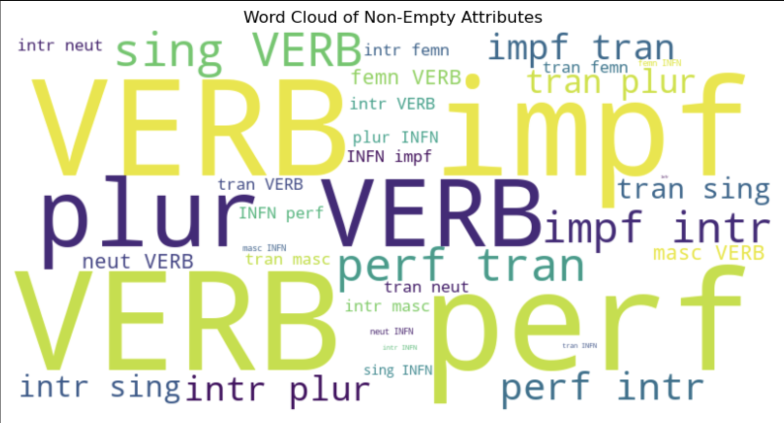

A Russian Verb Classification Model trained on the Russian Open Corpora dataset
This is Finn’s final project for the CS 451 Machine Learning class. It incorporates knowledge of the Russian langauge and much of what was taught in class to build an interactive language model to predict verb attributes for any given input Russian verb or infinitive.
Author
Finn Ellingwood
Published
May 15, 2023
Abstract
This project aimed to develop a Russian Verb Classification Model capable of accurately predicting attributes such as tense, person, mood, etc., when given a Russian verb or infinitive. By utilizing the Random Forest Classifier model and leveraging the data from the Open Corpora dataset, my goal was to achieve a high level of accuracy that could rival traditional dictionaries. Through meticulous implementation and evaluation, I successfully produced a model that delivers a list of likely attributes with precision comparable to dictionaries, empowering users with fast and reliable verb attribute predictions.
Introduction
Looking across the internet, I searched to see if anyone has done what I sought out to do using machine learning, but had not such luck. Mentioned here are papers closely related to my project and interest in the field of natural language processing (NLP), and in linguistic analysis in general, but they do not directly address my goal of developing a Russian Verb Classification Model. Let’s briefly explain each paper’s relevance and how they relate to my goal:
Artemova (2020) “Deep Learning for the Russian Language” by Ekaterina Artemova: This paper discusses deep learning applications in processing the Russian language. While it provides insights into the challenges and techniques of deep learning in NLP, it does not specifically focus on verb classification or address my goal.
Kutuzov A. (2017) “RusVectōrēs: A Toolkit for Building Web Interfaces for Vector Semantic Models” by Kutuzov A., Kuzmenko E.: This paper presents a toolkit called RusVectōrēs, which computes semantic relations between words in Russian and provides pre-trained distributional semantic models. While this resource can be useful for analyzing the semantics of Russian words, it does not directly relate to verb classification or my project’s objective.
Aleksandr Sboev (2016) “Machine Learning Models of Text Categorization by Author Gender Using Topic-independent Features” by Aleksandr Sboev et al.: This paper focuses on the problem of text categorization based on the author’s gender using clues like word endings and context. Although it deals with machine learning techniques applied to Russian-language texts, it does not address verb classification or align with my specific goal.
Olga Lyashevskaya (2015) “Inducing Verb Classes from Frames in Russian: Morpho‑Syntax and Semantic Roles”: This paper presents clustering experiments on Russian verbs using data from the Russian FrameBank. It explores the hypothesis of grouping verbs into semantic classes based on lexical and syntactic distributional profiles. While it pertains to verb classification in Russian, it does not directly align with my project’s objective of predicting attributes such as tense, person, and mood.
In summary, while these papers and many like them discuss various aspects of NLP and linguistic analysis in the Russian language, none of them specifically address or accomplish my goal of developing a Russian Verb Classification Model.
So with that, I will start to explore methods to reach my goal of verb classification. All of the files I will discuss here can be found on my github repository for this project located here: https://github.com/Norvoke/CSCI0451Project
There you can find a pretrained model to download and mess around with using the command-line. You will need the following libraries for it to run: urllib, joblib, numpy, pandas, and sklearn.
Values Statement
The potential users of my project are individuals who seek accurate and efficient predictions of verb attributes in the Russian language. These users could include language learners, translators, linguists, and anyone who deals with Russian verb analysis. Additionally, researchers and developers in the field of natural language processing and computational linguistics may find value in the techniques and methodologies employed in this project.
The technology that solves the problem of accurate verb attribute prediction in Russian benefits the users by providing them with fast and reliable information, empowering them to perform tasks more efficiently and accurately. This technology enhances their understanding and usage of the Russian language, saving time and effort in manual analysis.
While the technology itself does not have inherent harmful effects, its potential impact may depend on how it is implemented and used. There is a possibility that overreliance on automated tools could lead to a decline in manual linguistic analysis skills or the perpetuation of biases present in the training data. Therefore, it is crucial to ensure ethical considerations and a balanced approach in the development and use of the technology.
The implementation of this technology, when combined with responsible practices and continuous improvement, has the potential to contribute to a more equitable, just, and sustainable world. By providing accessible and accurate information to users, it can bridge language barriers and promote effective communication. However, it is important to recognize that technology alone cannot solely address systemic issues, can uphold inherent biases, and cannot guarantee societal progress. In the end, my goal to to explore these methods using my knowledge of machine learning, familiarity with linguistic concepts, and with grammar structures present in the Russian language.
Materials and Methods
The Data:
The homepage for the Russian OpenCorpora project translated (using Google translate) into English.
The OpenCorpora dataset is a valuable resource for linguistic analysis of the Russian language. It was collected and encoded by Rachael Tatman, and the dataset consists of two files: the corpus and the dictionary. The corpus is provided in .json format, while the dictionary is in plain text. The dataset is encoded in UTF-8, ensuring compatibility with various systems and applications.
The example snippet from the dataset demonstrates the format of the corpus. Each row represents a word or verb form along with its associated tags, providing information about the word’s part of speech, animacy, gender, number, case, aspect, person, tense, and mood. For nouns, the tags include information about animacy, gender, number, and case. For verbs, the tags include details about aspect, person, tense, and mood.
It is important to note some potential limitations of the OpenCorpora dataset. The dataset primarily focuses on Russian nouns and verbs, with limited coverage of other parts of speech. While it provides a significant amount of linguistic data with 1.5 million words, it may not represent the entirety of the Russian language. Additionally, the dataset’s representation of linguistic phenomena, such as dialectal variations or specific domains, may be limited.
Furthermore, the OpenCorpora dataset represents written Russian language usage, which may differ from spoken language or informal registers. The dataset may not capture the full range of variation and contextual nuances present in the language. The dataset is also subject to the bias of its sources, which range from across the internet to various publications and print media, which are not listed in full on their documentation. It is necesary to understand these sources are subject to the regional restrictions on freedom of print and other contributing factors which may alter the way written language differs from the de facto. It is essential to consider these limitations when utilizing the dataset for linguistic analysis or developing models based on its contents.
My Approach:
Initially I needed to pull only the verbs and infinitives from the dataset, so I wrote a short program to parse the text file and read the data into a pandas data frame. It just looked at the first attribute in the text line whether it was ‘INFN’ or ‘VERB’.
import pandas as pd# Read dictionary.txt filewithopen('dictionary.txt', 'r', encoding='utf-8') as f: data = f.readlines()# Extract rows with "VERB" or "INFN"verb_inf_data = []for i, row inenumerate(data):if"VERB"in row or"INFN"in row: verb_inf_data.append(row.strip().split("\t"))# Create pandas dataframedf = pd.DataFrame(verb_inf_data[1:], columns=["verb", "attributes"])
Then I needed to break up the data frame into parts, where the verb would go first after an entry number, followed by the list of attributes:
# Add leading numbers to each entrydf.index = df.index +1df.index.name ='Number'split_data = []for i, row in verb_inf_data: split_data.append((row.strip().split(",")))df = pd.DataFrame({'Entry': verb_inf_data[1:]})verb_frame = pd.DataFrame({'verb': list(list(zip(*verb_inf_data))[0])})verb_frame.insert(1, "attributes", split_data)
This is where my data parsing would produce some issues down the line in my training section, as to the computer, the attributes entries, while seperated by comma, were still treated as whole parts instead of individial attributes.
Initially I tried KMeans clustering, as in my brain, I had an idea that there were many groups of verbs, like all those which are plural or all those that are first person, and that the model could pull these out. I also perfomed the vectorization step here with the dividing of the data into valadation and test portions:
from sklearn.feature_extraction.text import CountVectorizerfrom sklearn.cluster import KMeansfrom sklearn.metrics import silhouette_score# Load the DataFrame from your sourcedata = df.head(2000)# Split the data into input features (verbs) and target labels (attributes)X = data['verb']y = data['attributes']# Vectorize input features using CountVectorizervectorizer = CountVectorizer()X = vectorizer.fit_transform(X)self._vectorizer = vectorizerKMeans(n_clusters=20, random_state=0)# Evaluate the clustering using silhouette scorelabels = model.predict(X)score = silhouette_score(X, labels)print(f"Silhouette score: {score}")
Silhouette score: 0.02340348182286992
A reminder that the silhuette score reflects how defined the borders of clusters are, and even with taking a smaller portion of the data to spead of teasting and getting the highest score possible with a number of clusters around 20, the silhuette score was still far to low to be usable, not even approaching 0.5.
So I tried some more data manipulation and reasearched to find a better algorithm to use. I ended up settling on the random forest classifier approach, and modified the way my data was stored to optimize its use with the RandomForestClassifier. I did this by seperating each verb attribute into a separate column in a new data frame, with the number of columns corresponding with the maximum number of attributes. I also shuffled thr rows from its original alphabetized form to rid the bias that might result from that and took the a random 40 thousand entries as my computer ended up running out of memory somewhere along the way when I used more of the data. This should still provide more than sufficient training data.
# Gathering just an even 40k of the ~41k rows to make dealing with them a bit easierdf = df.sample(frac =1).head(40000)# Split attributes column into separate columnsdf_attributes = df['attributes'].apply(lambda x: pd.Series(x.split(',')))df_attributes.columns = ['attribute{}'.format(i) for i inrange(1, len(df_attributes.columns) +1)]# Merge verb column with split attributes columnsdf = pd.concat([df['verb'], df_attributes], axis=1)# Fill NaN values with empty stringsdf.fillna(value='', inplace=True)# Create parallel data frame with separate columns for each attributeparallel_df = pd.DataFrame()for column in df_attributes.columns: attribute_values = df_attributes[column].unique()for value in attribute_values: parallel_df[f'{column}_{value}'] = df['verb'].where(df[column] == value, '')# Extract the verb and attribute columns from the dataframeverbs = df['verb']attributes = df.iloc[:, 1:]
I quickly wanted to visualize the data again now that I had seperated the attributes. I used matplotlib to make the following bar graph showing the frequency on the most common attributes. It had some issued like plotting the “intr Erro,” but you can see that the INFN and VERB columns, if stacked would equal 40,000, which goes along with our data set size, this also applies to the ‘impf’ and ‘perf’ attributes, which in Russian corresponds to imperfective and perfective verbs, which a verb can be one or the other, not neither nor both:
I also tried to put together a word cloud of the attributes, though my graphing method may be flawed. It required me to drop all the empty attribute columns, which I did for the earlier visualization. But it also had me concatenate all of the verb attributes so I had uniform columns. The visualization still helps in seeing the frequency which corresponds to the size of the attributes below, which shows the biggest group fits into either ‘VERB impf’ or ‘VERB perf’:

With a better understanding of out data and our model already initialized, the reasons for choosing the RandomForestClassifier method are more clear, but I can outline them here:
Non-linearity: RandomForestClassifier is a non-linear model that can capture complex relationships between input features (verbs) and output classes (attributes). Verbs can have various patterns and combinations of attributes, and a non-linear model like RandomForestClassifier can capture these intricate patterns better than linear models.
Robust to irrelevant features: RandomForestClassifier can handle a large number of input features (verbs) without requiring feature selection or dimensionality reduction techniques. It automatically selects relevant features and assigns them appropriate importance during the training process. This is advantageous when dealing with a potentially large vocabulary of verbs (which I would say we have).
Handling categorical data: RandomForestClassifier naturally handles categorical data, making it suitable for classifying verbs based on categorical attributes like tense and person. It can learn the decision boundaries and relationships between different attribute values, allowing it to make accurate predictions.
With that, let’s train!
Results
Here I started the training model and had it print the final results of all the training steps:
Thses final lines are important, as they show the actual accuracy of my model in terms of the split data testing validation. The micro avg takes into account how many samples there are per category, which is not uniform in this data as the number of attributes do not match across all verbs, so take this number with a grain of salt. The macro avg is also a bit hard to interperet as the classes are not uniform again.
But we can see the results of the RandomForestClassifier, which can be interpreted based on the metrics provided in the output. Here’s a basic breakdown of the metrics and their implications:
Micro Average:
Precision (0.93): This represents the proportion of true positive predictions out of all the positive predictions made across all classes. In this case, the micro-average precision is 0.93, indicating that 93% of the positive predictions made by the model are correct. Recall (0.84): This represents the proportion of true positive predictions out of all the actual positive instances across all classes. A micro-average recall of 0.84 means that the model is able to correctly identify 84% of the positive instances. F1-Score (0.88): The F1-score is the harmonic mean of precision and recall. It provides a balanced measure of the model’s accuracy. A micro-average F1-score of 0.88 indicates a good overall performance of the model in terms of both precision and recall.
Macro Average:
Precision (0.50): The macro-average precision is the average precision across all classes. A value of 0.50 suggests that the model’s precision varies widely across different classes, with some classes performing well and others poorly (this makes sense with our variety of number of attributes to each verb entry). Recall (0.38): The macro-average recall is the average recall across all classes. Similarly, a value of 0.38 indicates that the model’s recall varies significantly across classes. F1-Score (0.43): The macro-average F1-score is the average F1-score across all classes. With a value of 0.43, it suggests an overall moderate performance of the model in terms of precision and recall across all classes.
Weighted Average:
Precision (0.92): The weighted-average precision considers the number of samples in each class. It provides an overall precision measure while accounting for class imbalances. A value of 0.92 indicates a high precision for the model. Recall (0.84): The weighted-average recall is similar to the weighted-average precision but considers recall instead. It also accounts for class imbalances. A value of 0.84 suggests a reasonable recall rate for the model. F1-Score (0.87): The weighted-average F1-score considers both precision and recall while accounting for class imbalances. A value of 0.87 indicates a good overall balance between precision and recall.
Samples Average:
Precision (0.93): The samples-average precision is similar to micro-average precision, but it treats each sample (instance) as an individual observation rather than aggregating by class. A value of 0.93 suggests that, on average, the model has a high precision for individual predictions. Recall (0.84): The samples-average recall is similar to micro-average recall, treating each sample as an individual observation. It indicates that, on average, the model is able to correctly identify 84% of the positive instances in the dataset. F1-Score (0.88): The samples-average F1-score is the harmonic mean of samples-average precision and samples-average recall. It provides an overall measure of the model’s accuracy on an individual sample level.
Overall, the RandomForestClassifier model seems to perform well in terms of precision, recall, and F1-score when considering the micro-average and weighted-average metrics. However, the macro-average metrics suggest that the model’s performance varies significantly across different classes. It’s important to investigate further to identify which specific classes or attributes may have lower performance and may require further improvement.
Next comes my favorite part of actually testing verbs to see what our model believes would be their attributes. I wrote a wuick function which intakes the verb and returns the predicted attributes:
I needed some verbs to test, so I went to Cooljugator, a tool used in my Russian class to learn verb conjugation, to look at the most common verbs.
It a less scientific test, more interesting to me as a learner of Russian, I picked the last five verbs from the list and put in their infinintives and got the following:
Enter a verb: Покупать
('', 'INFN', 'impf', 'tran')
Enter a verb: Начинать
('', 'INFN', 'impf', 'tran')
Enter a verb: Мыть
('', 'INFN', 'impf')
Enter a verb: Слушать
('', 'INFN', 'impf', 'tran')
Enter a verb: Спрашивать
('', 'INFN', 'impf', 'tran')
It corroectly identifies all of the infinitives with the correct ‘INFN’ attribute, as well as confirming that all these verbs are imperfective with the ‘impf’ tag. These where all transitive verbs, and it got the ‘tran’ tag correct for 4/5 verbs. Now let’s try with some conjugated verbs:
Enter a verb: спрашиваю
('', '1per', 'VERB', 'impf', 'indc', 'pres', 'tran sing')
Enter a verb: слушаем
('', '1per', 'VERB', 'impf', 'indc', 'pres', 'tran plur')
Enter a verb: моют
('', '3per', 'VERB', 'impf', 'indc', 'pres')
Enter a verb: начинаете
('', '2per', 'VERB', 'impf', 'indc', 'pres', 'tran plur')
Enter a verb: покупает
('', '3per', 'VERB', 'futr', 'indc', 'perf', 'tran sing')
I copied the following from the very same Cooljugator tool where I got the verbs so we can compare with the above results (I highlighted the selected verbs):
For this example, let’s ignore the ‘tran’ part of the ‘tran plur/sing’ as it is a bit beyond the scope of the explanation needed here.
We can see for the first example “спрашиваю,” it correctly identifies that it is first person and singular, meaning “I ask.” The next example, “слушаем” is correctly identifies it as first person plural. In fact, it identifies the person correctly for all of these examples, it only messes up where it did in the earlier example, on “моют.” This shows the model correctly groups the conjugated and infinitive forms of the verb with the same attributes, but it also means if it incorrectly identifies or fails to identify attributes, this can carry over to the other forms of the verb. One possible fix to this could be to gorup all variants of the same verb seperately, at the cost of storage and efficiency.
Concluding Discussion
In conclusion, my machine learning model, trained on the Open Corpora Russian word list, demonstrates a remarkable ability to accurately identify verb attributes. Its high accuracy can be attributed to the comprehensive and diverse training data provided by the Open Corpora Russian word list, enabling the model to learn the intricate patterns and nuances of verb attributes in the Russian language.
To further enhance the performance of my model in the future, I could consider incorporating additional linguistic features such as syntactic structures, semantic relations, or contextual information. These elements can provide valuable insights and help the model capture the broader context in which verbs and their attributes occur.
Furthermore, expanding the training data to include a wider range of text genres, domains, and linguistic variations would likely improve the model’s generalization capabilities. This would ensure that the model can handle various real-world scenarios and adapt to different writing styles or domains.
This lies more outside of the scope of my initial plans for my model, but I look forward to exploring this in the future.
I believe I met my goals of the project. I had some plans to compare with non-machine-trained models, like that of two previous students’ work who made a model doing something very similar with Arabic verbs, but adapting it to work with Russian would have been a whole project on its own.
I also would have liked to make the model more interactive and usable from a language learner’s perspective, as this was my goal to make a tool useful for learning and analyzing Russian verb structure. Unfortunately, my skills when it comes to making a web app and the resources I would need to host my model are just not there to make it happen yet. I again look forward to exploring this in the future, but for now the tool will only be interactive through the command-line.
Contributions Statement
All of the code seen here was written by myself, with a lot of help from class work in my CS451 Machine Learning class, taught by the amazing Professor Chodrow. I also thank the folks who made SciKit Learn for their amazing documentation, especially for the RandomForestClassifier examples provided here.
Personal Reflection
In retrospect, my CS 451 Machine Learning project was centered around the development of a model capable of identifying attributes for Russian verbs. With a somewhat surprising level of accuracy, the model successfully assigned attributes to various input verbs, presenting a promising outcome.
Throughout the project, the model proved itself to be a reliable companion, exhibiting an aptitude for understanding the intricate relationships between verbs and their associated attributes. Its ability to decipher the nuanced patterns of the Russian language offered a glimmer of hope for those seeking an automated solution to this particular linguistic challenge.
While the project may not have produced rib-tickling anecdotes or unexpected twists, it nonetheless showcased the efficacy of machine learning algorithms in tackling linguistic tasks. The model’s consistent performance allowed for a dry but gratifying sense of accomplishment, affirming the value of meticulous training and careful feature selection.
As I reflect upon this project, the humor lies in the unassuming nature of the outcome. There were no extravagant claims or over-the-top flamboyance; just a methodical exploration of data and algorithms resulting in a tool that quietly achieved its intended purpose. In the world of machine learning, even modest successes deserve recognition, and this project served as a reminder of the incremental progress we can make in unraveling the complexities of language.
References
Aleksandr Sboev, Dmitry Gudovskikh, Tatiana Litvinova. 2016. “Machine Learning Models of Text Categorization by Author Gender Using Topic-Independent Features.”Procedia Computer Science.
Artemova, Ekaterina. 2020. “Deep Learning for the Russian Language.”The Palgrave Handbook of Digital Russia Studies, 465–81.
Kutuzov A., Kuzmenko E. 2017. “WebVectors: A Toolkit for Building Web Interfaces for Vector Semantic Models.”Communications in Computer and Information Science, 156–61.
Olga Lyashevskaya, Egor Kashkin. 2015. “Inducing Verb Classes from Frames in Russian: Morpho‑syntax and Semantic Roles.”